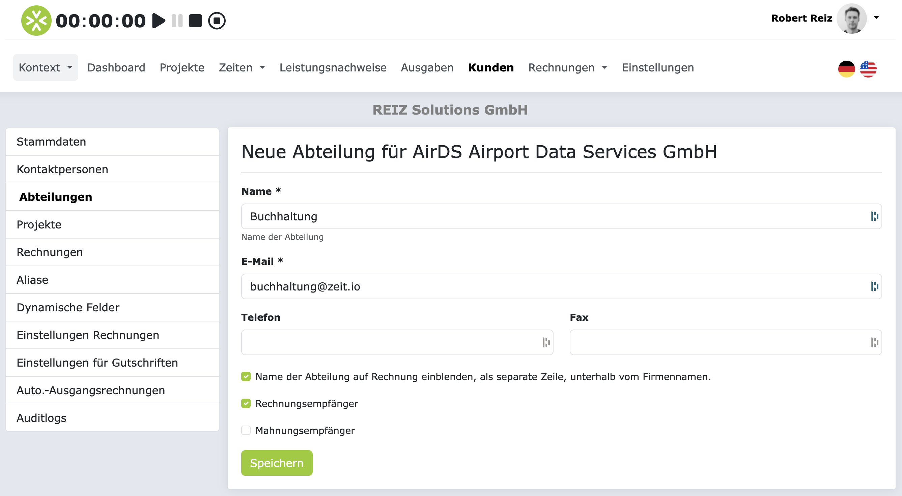

Kunden
In ZEIT.IO können Sie Ihre Kunden anlegen und verwalten. Ein Kundenobjekt kann neben den Stammdaten auch Kontaktpersonen, Abteilungen und Kommentare enthalten. Ein Kundenobjekt kann folgende Elemente enthalten, bzw. mit diesen verknüpft sein:
- Stammdaten
- Kommentare
- Kontaktpersonen
- Abteilungen
- Projekte
- Rechnungen
- Aliase
- Dynamische Felder
- Einstellungen für Ausgangsrechnungen
- Einstellungen für Gutschriften
- Einstellungen für Automatische-Ausgangsrechnungen
- Auditlogs
Ohne Kundenobjekt kann auch keine Ausgangsrechnung erstellt werden. Jede Rechnung muss einem Kundenobjekt zugeordnet sein. Das ist wichtig, um sicherzustellen, dass die Rechnung auch an die richtige Adresse zugestellt wird.
Stammdaten
Die Stammdaten eines Kundenobjekts enthalten die wichtigsten Informationen über den Kunden. Dazu gehören:
- Kundennummer: Eine eindeutige Nummer, die automatisch generiert wird.
- USt-IdNr.: Die Umsatzsteuer-Identifikationsnummer des Kunden.
- Name: Der offizielle Name des Kunden, wie er auf Rechnungen und Angeboten erscheinen soll.
- Kennung: Ein eindeutiger Name für den Kunden, der in der Anwendung verwendet wird. Standardmäßig wird der Name des Kunden als Kennung verwendet, jedoch kann die Kennung auch abweichen.
- Addresse: Die offizielle Anschrift des Kunden.
- Webseite: Die Webseite des Kunden.
- E-Mail: Die E-Mail-Adresse des Kunden.
- Telefon: Die Telefonnummer des Kunden.
- Fax: Die Faxnummer des Kunden.
- Zahlungsziel: Zahlungsziel in Tagen. Hier können Sie festlegen, wie viele Tage der Kunde Zeit hat, um die Rechnung zu bezahlen. Wenn eine Rechnung an den Kunden erstellt wird, dann wird das Zahlungsziel automatisch in die Rechnung übernommen.
- Bankverbindung: Wenn Sie mehrere Bankverbindungen haben, dann können Sie hier die Bankverbindung auswählen, die für diesen Kunden gelten soll. Wenn eine Rechnung an den Kunden erstellt wird, dann wird die Bankverbindung automatisch in die Rechnung übernommen. Dies ist dann die Bankverbindung, an die der Kunde die Zahlung leisten soll.
- Lieferantennummer: Wenn Sie vom Kunden eine Lieferantennummer erhalten haben, dann können Sie diese hier hinterlegen. Die Lieferantennummer wird dann in Rechnungen und Angeboten automatisch übernommen.
- Rechnungshinweis: Hier könnnen Sie einen Hinweis hinterlegen, der im Rechnungsmodul auftaucht, sobald der Kunde ausgewählt wurde. Der Rechnungshinweis ist für die Person gedacht, welche die Rechnung erstellt. Der Rechnungshinweis wird nicht in die Rechnung übernommen!
- Aktiv: Mit dieser Checkbox können Sie den Kunden aktivieren/deaktivieren. Ein deaktivierter Kunde kann nicht mehr für neue Projekte oder Rechnungen verwendet werden. Ein deaktivierter Kunde bleibt aber in der Datenbank erhalten und kann auch wieder aktiviert werden. Es macht Sinn, nicht mehr benötigte Kunden zu deaktivieren, um die Auswahllisten im Rechnungsmodul zu verkürzen.
Kommentare
In den Kommentaren können Sie beliebige Informationen über den Kunden hinterlegen. Die Kommentare sind nicht öffentlich und sind nur für Benutzer sichtbar die Zugriff auf Ihre Organisation haben.
Abteilungen
Große Kunden haben natürlich auch mehrere Abteilungen. Jede Abteilung ist für eine bestimmte Sache zuständig. Ganz oft gibt es z.B. eine Einkaufsabteilung, eine Rechnungsabteilung, eine Finanzabteilung, etc.. Abteilungen haben in der Regel auch einen eindeutigen Namen, einen eigenen E-Mail-Verteiler und eine eigene Telefonnummer/Faxnummer.
Dementsprechend können Sie auch die Abteilungen Ihrer Kunden in ZEIT.IO abbilden. Bei Projekten und Rechnungen können Sie dann, bei der Kundenzuordnung, auch die Abteilung auswählen. Das kann dann einen Einfluss auf die Rechnungsadresse haben und auf die Empfänger-E-Mail-Adresse.
Um eine Abteilung anzulegen, navigieren Sie bitte zu dem gewünschten Kunden und klicken dann links im Seitenmenü auf "Abteilungen". Hier sehen Sie die Liste aller vorhandenen Abteilungen und hier können Sie auch eine neue Abteilung anlegen. Dafür klicken Sie bitte auf den Button "Neue Abteilung anlegen". Das Formular dazu sieht dann so aus:

Hier können Sie dann den Namen der Abteilung, die E-Mail-Adresse und die Telefonnummer/Faxnummer hinterlegen.
Mit der ersten Checkbox können Sie kontrollieren, ob der Name der Abteilung auf der Rechnung erscheinen soll. Wenn die Checkbox nicht aktiv ist, dann taucht der Name der Abteilung nicht in der Rechnungen auf. Wenn die Checkbox aktiviert ist, dann wird der Name der Abteilung, in Rechnungen, als separate Zeile, unterhalb des Kunden-Namens, aufgeführt. Dies kann sehr wichtig sein, um sicherzustellen dass die Rechnung auch an die richtige Abteilung zugestellt wird.
Außerdem können Sie mit den zwei letzten Checkboxen festlegen, ob diese Abteilung ein Rechnungs-Empfänger, bzw. ein Mahnungs-Empfänger ist.
Wenn ein Kundenojekt, mit mehreren Kontaktpersonen und Abteilungen, nur einen Rechnungsempfänger hat, dann wird beim Versenden der Rechnung via E-Mail, immer die E-Mail-Adresse des Rechnungsempfängers vorbelegt. Bei der Auto-Invoice-Konfiguration im Projekt, tauchen standardmäßig auch nur die Rechnungsempfänger auf.
Beim Versandt von Mahnungen, werden standardmäßig nur E-Mail-Adressen von Abteilungen und Kontaktpersonen verwendet, die als Mahnungs-Empfänger markiert sind.